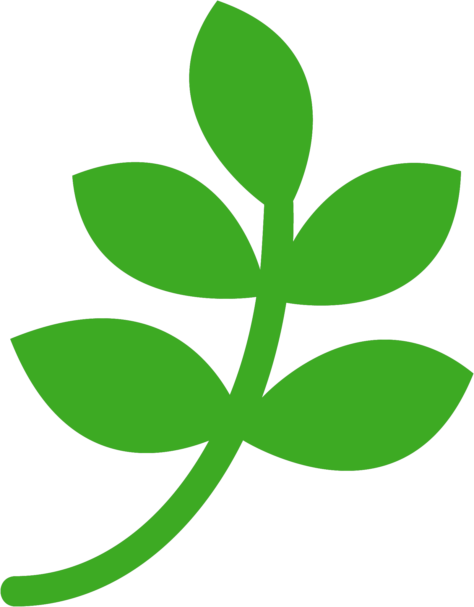
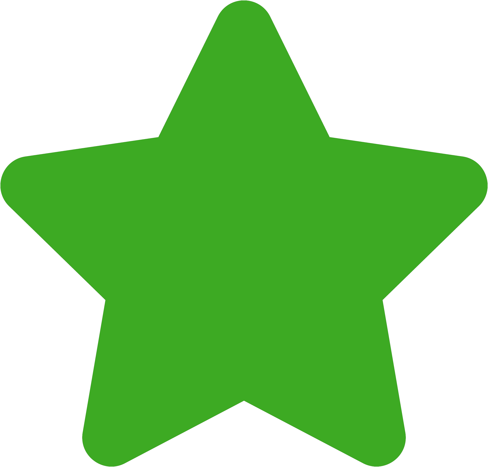
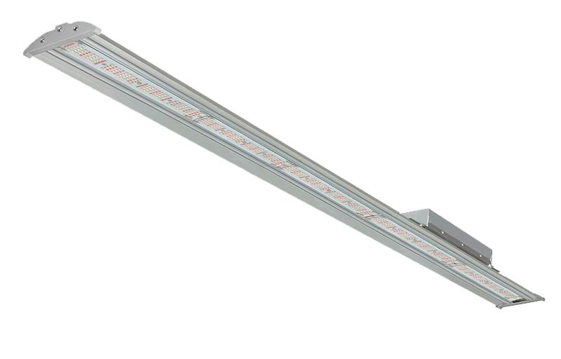
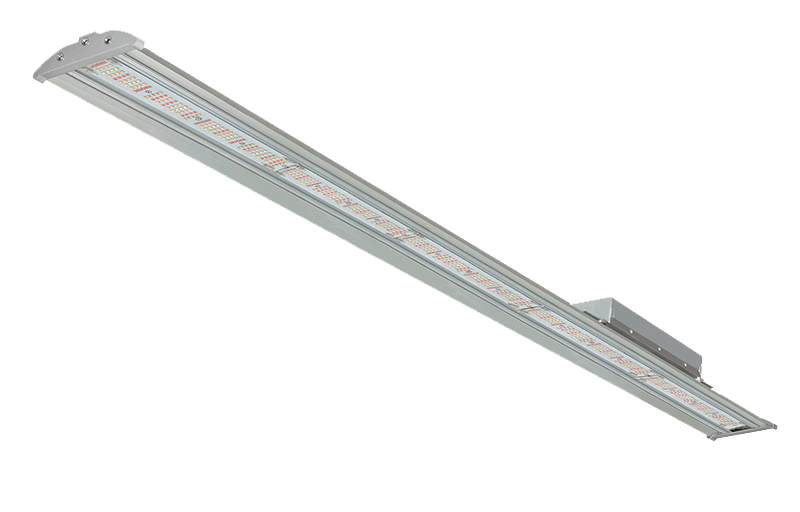

Высокоэффективные светодиодное освещение с солнечным спектром для выращивания в теплицах
Польза для растений и людей
Мы предлагаем профессиональные решения для тепличных культур на основе солнечного спектра, специально разработанного для получения наилучших результатов, обеспечивающих не только увеличение объемов урожая, но, прежде всего, повышение его качества.
Мы учимся у природы и используем солнечный спектр для воспроизведения естественной среды обитания флоры. Ведь она способствует росту и оптимальному развитию растений. Растения получают весь диапазон биологически активного спектра (380-780 нм), который обеспечивает благотворное влияние на метаболические процессы, благодаря чему созревает большее количество плодов очень высокого качества.
Специализированный свет с учетом вашей теплицы
Мы предлагаем не просто светильники, а научные советы, направленные на поиск наилучшего урожая и высочайшего качества выращивания. Мы собираем и оцениваем все данные о характеристиках теплиц, выращиваемых растениях и Ваших стратегических производственных и экономических целях.
После полного анализа мы рекомендуем правильную конфигурацию системы освещения для достижения наилучшего баланса между стоимостью и производительностью.
40 лет передовых решений в вашем распоряжении
 Сотрудничество с Минской Академией наук (Беларусь) дает нашим клиентам 40-летний опыт работы как в области биологии с глубокими знаниями практик и технологий для садоводства и цветоводства, так и в изучении правильного освещения, а также биохимических процессов, вызванных светом и его спектром.
Синергетические исследования и разработки этих двух секторов (биотехнологии и освещения) позволили разработать эксклюзивное решение с высокоэффективными светодиодами полного спектра за счет применения запатентованной технологии, которая изменяет и оптимизирует спектр излучения, позволяя предприятию раскрыть свой максимальный потенциал.


1999 г - в сотрудничестве с российскими научными учреждениями были разработаны и построены прототипы фитотронов для выращивания салата и китайской капусты для космического применения.


2014 год - построена специальная биологическая камера, которую использовали для антарктической экспедиции Национальной академии наук.
FLORA LED FULL SPECTRUM
 

Технические особенности
- Корпус лампы изготовлен из высококачественного экструдированного алюминия, защищенного слоем оксида алюминия и полиэфирной порошковой краской, что обеспечивает долгий срок службы в теплицах.
- Защитное стекло из оптического поликарбоната выдерживает длительное воздействие солнечного излучения и обладает высокой механической прочностью.
- Светодиодные источники света производства NICHIA Corporation (Япония) с добавлением ноу-хау в области люминофорных технологий для получения специального спектра (FULL SPECTRUM ).
- Регулировка светового потока от 0 до 100% с возможностью подключения к системам автоматического управления, таким как метеостанции, датчики освещения и многое другое, чтобы обеспечить своевременный контроль освещения фитоценоза, обеспечивая оптимизацию потребления энергии.
- Длительный срок службы не менее = 40 000 часов
- 5 лет гарантии
Скачать сертификаты


Контакты
- ЦСОТ при НАН Беларуси
- Беларусь, Минск, Логойский тракт 20
- +375(25)9237554